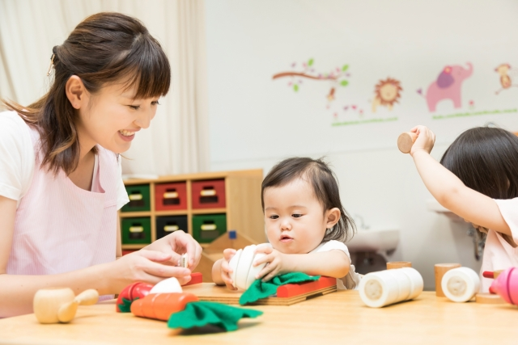

園の取り組み
安心・手作りの給食で「おいしいね！」を育てる
園内調理のあたたかい手作り給食を毎日提供しています。国産食材を中心に、薄味で素材の味を大切にした安心メニュー。食べることが「楽しい」「うれしい」体験となるよう、苦手なものも無理せず、少しずつ挑戦できるようにしています。

小さな「できたね！」を見逃さない声かけ
子どもががんばったとき、できたときは、すぐに言葉で伝え、共感します。「がんばったね」「ひとりでできたね」「工夫したね」など、結果だけでなく過程にも注目する声かけを心がけています。

週1回のリトミックで、表現するよろこびを
音楽に合わせて体を動かすリトミックを、週に1回取り入れています。リズムに乗って体を動かす中で、感じたことを自分なりに表現したり、お友だちと楽しさを分かち合ったり。「やってみたい！」が自然とあふれる時間です。
大切な命を守るために——SIDS対策の徹底
乳児突然死症候群（SIDS）を予防するため、0歳児には5分ごとの呼吸チェックを行い、うつぶね寝を避けるなど、細やかな安全管理を行っています。子どもたちが安心して眠れる環境づくりは、すこやかな育ちの第一歩です。